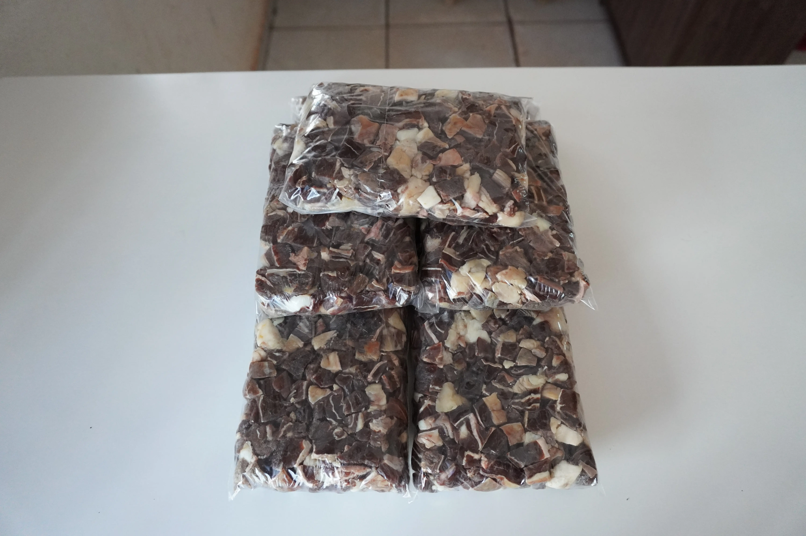
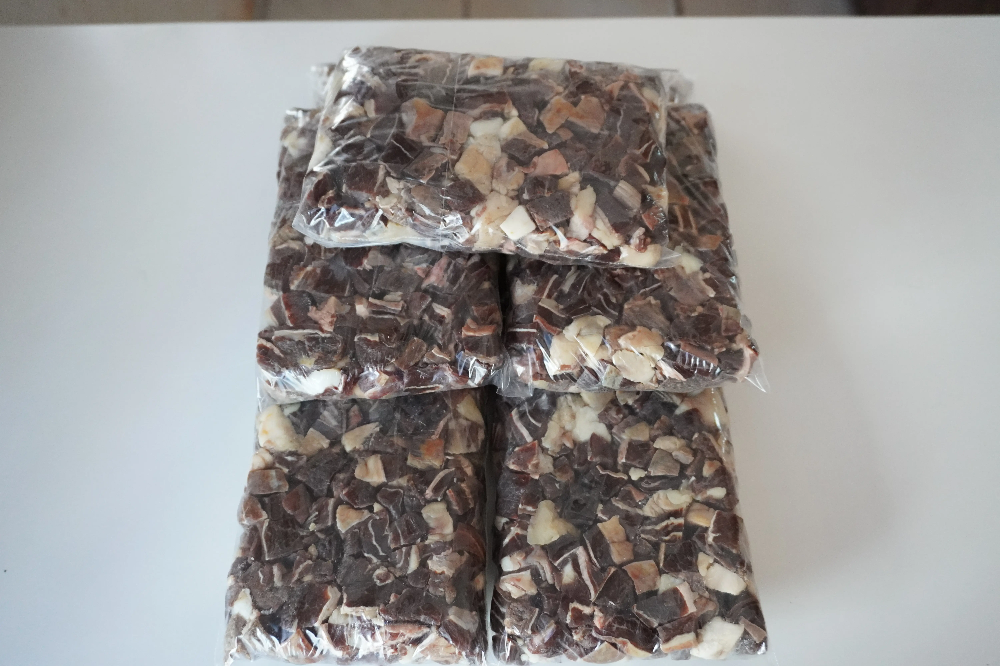

Carne Seca Tradicional
Curada ao sol — Tradição mato-grossense
Produto artesanal vendido em pacotes.
Consultar e EncomendarRetire na loja: R. Bom Jardim, 379 — Centro, Cáceres.
Carne Seca: A Tradição que Alimentou o Pantanal
A carne seca — também chamada de carne de sol em partes do Centro-Oeste e Nordeste — é um dos produtos mais enraizados na cultura alimentar de Mato Grosso. Antes da refrigeração chegar às fazendas isoladas do Pantanal, salgar e secar a carne ao sol era a única forma de conservá-la por semanas sem perder a qualidade. O que nasceu por necessidade tornou-se sabor: a desidratação concentra os nutrientes e intensifica o gosto, criando um produto único que nenhum processo industrial consegue reproduzir fielmente.
O Processo de Salga e Cura Natural
A carne seca artesanal começa com cortes bovinos nobres — coxão mole, chã de dentro ou alcatra —, escolhidos pela espessura uniforme que permite uma cura homogênea. As peças são generosamente cobertas com sal grosso e ficam em repouso por 24 a 48 horas, tempo em que a salmoura formada penetra profundamente nas fibras. Em seguida, as mantas são abertas e penduradas ou estendidas em varais ao sol matutino e à sombra à tarde, ciclo que se repete por dois a três dias conforme as condições climáticas. O resultado é uma carne de coloração avermelhada escura por fora, suculenta e levemente rosada por dentro, com aquele aroma característico que desperta memórias afetivas em quem cresceu no campo.
Na Cozinha: Do Carreteiro ao Maria-Izabel
A carne seca é a estrela de dois pratos símbolos da culinária mato-grossense. O arroz carreteiro, prato que acompanhava os tropeiros nas longas viagens de gado, é feito refogando a carne seca dessalgada e desfiada com toucinho, cebola e alho, para depois absorver o arroz no mesmo caldeirão — o sabor defumado e salgado da carne impregna cada grão. Já o maria-izabel, prato mais caseiro e cotidiano, leva pequenos cubos de carne seca fritos na própria gordura e misturados ao arroz cozido com temperos simples, resultando em algo de sabor incrível com pouquíssimos ingredientes.
Na Peixaria Rio Paraguai, a carne seca é produzida com todo o cuidado do processo artesanal e embalada a vácuo logo após a cura, para preservar o ponto ideal de salinidade e umidade. Vendida em mantas inteiras ou pacotes menores, é ideal tanto para o consumo familiar quanto para restaurantes que valorizam a autenticidade da cozinha regional. Encomende pelo WhatsApp e leve um pedaço da tradição mato-grossense para a sua mesa.